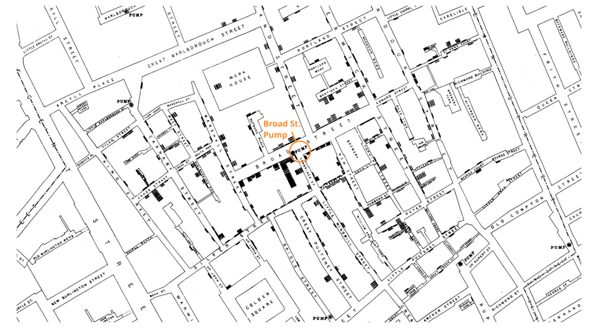
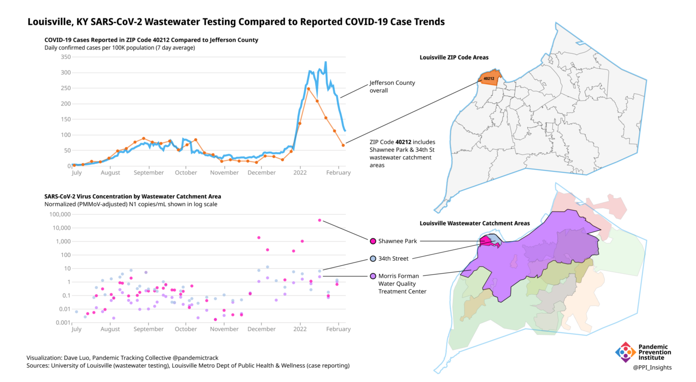
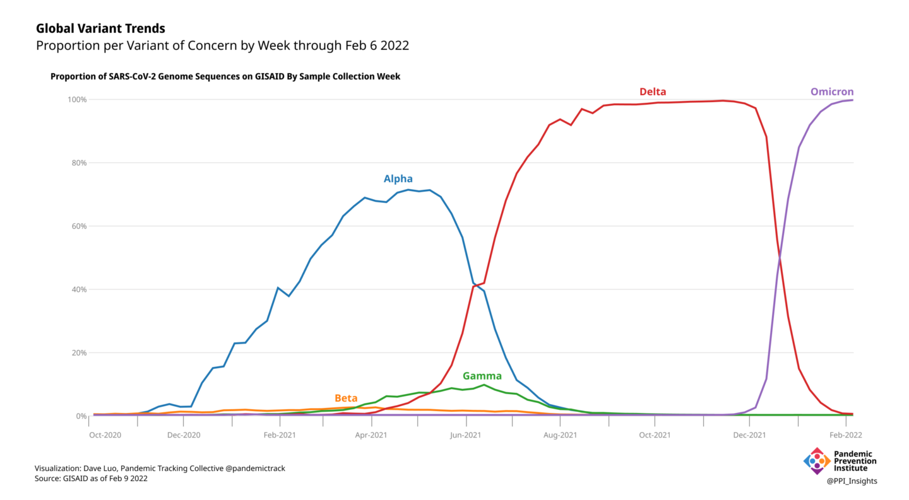

Tracking SARS-CoV-2 and its Variants in Wastewater: An Old Technique is Yielding Powerful New Insights in the COVID-19 Pandemic
The CDC’s new data tracker has increased public interest in wastewater. Here is a deep dive into wastewater testing: its history, scientific basis, applications, and future.
The newest addition to the Centers for Disease Control and Prevention’s (CDC) suite of COVID data trackers reports on levels of SARS-CoV-2 RNA in wastewater. While researchers, public health departments, and some private companies have been monitoring wastewater since the beginning of the pandemic, this tracker marks an important step in the establishment of the National Wastewater Surveillance System (NWSS).
Hospitalization and death rates, and case counts obtained from clinical samples, can provide information about the trajectory of the pandemic, but they do not paint a complete picture. Many infected people are asymptomatic or go untested, and the lag time between testing and reporting is often delayed beyond useful purpose. With a long history and a strong scientific basis, wastewater monitoring adds critical data and insights into a rapidly evolving situation. From national systems down to the neighborhood level, or even to individual buildings, data obtained from wastewater can complement clinical data to support evidence-based public health policies and decisions in numerous ways.
Wastewater has played a role in disease surveillance for centuries.
For thousands of years, humans have recognized that their waste could harbor disease, and sanitation practices were developed to keep sewage separate from drinking water. In a classic 1854 epidemiology example, John Snow used a map of cholera cases in London to track the origin of the outbreak—a pump that supplied water contaminated with sewage. To stop people from using the water, he removed the pump handle. We now know that waste can inform as well as infect. Wastewater testing provides important insights into the health of a population by detecting chemicals, disease-causing organisms, and other markers of public well-being.

For decades, wastewater testing has played an important role in the global effort to eradicate polio, especially in resource-poor environments. Poliovirus detected in wastewater can alert officials to the presence of the virus in a community, even in the absence of clinical disease. Genetic analysis of pathogen-positive wastewater samples can help track a virus to its source and monitor a virus as it evolves. Control measures, including vaccination, hospital resources, and therapeutics, can then be effectively and efficiently targeted to a specific location.
Wastewater surveillance is an important part of the public health response to COVID-19.
Unlike poliovirus and the bacterium Vibrio cholerae, which are transmitted through water contaminated with human waste, SARS-CoV-2 is transmitted through the air. Although there is no evidence of COVID-19 transmission through wastewater, about half of infected individuals can excrete the virus in their feces, even when they do not have gastrointestinal symptoms. Viral shedding in feces can occur 3-5 days before symptoms appear, if symptoms appear at all.
Data about the presence of SARS-CoV-2 RNA in wastewater can be used to monitor trends in community transmission and to inform public health decisions. Wastewater surveillance can provide early indications of community transmission or surges in COVID-19, sometimes preceding reports of positive clinical samples by 1-2 weeks, giving health systems critical lead time.** **Declines in wastewater virus levels may also precede drops in clinical cases.
In the early months of the pandemic, hundreds of studies demonstrated the feasibility of using wastewater surveillance to track SARS-CoV-2. On a national level, several countries, including Australia, India, Israel, the Netherlands, Pakistan, and Sweden, were able to pivot existing wastewater surveillance programs to COVID-19. Currently, at least 58 countries monitor wastewater at some level. Many of the more than 16,000 water treatment plants within the US are monitoring wastewater, and the CDC tracker is a first step toward a coordinated national system in the US. As more sites come online, and as methods are standardized, the value of the tracker will continue to increase after this promising first step.
Wastewater sampling at a centralized water treatment facility can provide information for a city or region within its sewershed, the area from which wastewater arrives at a single treatment plant. Sampling at smaller sewer catchment areas within the larger sewersheds, such as via manholes, can provide more focused information, sometimes down to the neighborhood level. Any “hot spots” that are detected can then be identified for targeted public health intervention and mitigation.
One such “hot spot” was detected in Louisville, Kentucky during the onset of their 2021 Omicron variant surge. The Pandemic Prevention Institute (PPI) partners at the University of Louisville track SARS-CoV-2 in small wastewater catchment areas, which complements the clinical data collected by the Louisville Metro Department of Public Health & Wellness. Prior to Omicron, clinical cases reported within the 40212 ZIP code had been roughly comparable to those of the city, but beginning in November 2021, wastewater data painted a different picture. With wastewater, Louisville was able to zoom in more closely into the community and noted that only part of the 40212 ZIP code was showing unusual patterns of virus prevalence. Specifically, in contrast to the clinical case data, wastewater data showed much higher levels of virus in the Shawnee Park area of 40212, compared to the 34th Street area and to the larger sewershed that includes both Shawnee Park and 34th Street. Such findings suggested a need for localized investigation and potential interventions in the Shawnee Park area, an opportunity that would have been delayed or missed completely by relying on clinical data alone.

Even more localized data can be obtained by examining wastewater from individual facilities, such as prisons, schools, and long-term-care centers. Samples from airports, aircraft, and cruise ships can reveal infections among travelers. Universities and colleges have used wastewater data from dormitories to detect and control outbreaks. For example, in August 2020, the University of Arizona detected SARS-CoV-2 in wastewater from one dormitory. All 311 residents were tested, and two asymptomatic cases were discovered. Those students were isolated, likely averting an outbreak.
When an outbreak is detected in a neighborhood or building, targeted control measures can be initiated. Depending on the circumstances, these might include:
- public health outreach and education
- quarantine or isolation
- clinical screening/testing, vaccination
- surge staffing for hospitals
- targeted distribution of stockpiled inventory of therapeutics, ventilators, or oxygen
- increased masking
- social restrictions
The public health response to such an outbreak can be tailored to the specific population in question, with attention to factors such as language, culture, disability, literacy, mobility, age, and internet access. Mobile testing and vaccination clinics may also be redirected to the area.
Wastewater testing has been particularly powerful in tracking SARS-CoV-2 variants.
The emergence of the Omicron variant in November 2021 has been a turning point in the COVID-19 pandemic. When it was declared a Variant of Concern by the World Health Organization on November 26, 2021, little was known about Omicron’s growth characteristics, transmissibility, immune evasion, ability to cause serious disease, or even its whereabouts. What was known was its genetic sequence. By sharing the sequence rapidly into the global GISAID domain, scientists in South Africa provided researchers and public health officials worldwide the information they needed to detect and track the rapidly spreading variant in clinical samples and in wastewater.

Genomic surveillance has been critical for tracking SARS-CoV-2 variants. Reliance on clinical samples for genomic data can be insufficient, however, when healthcare and laboratory systems are limited or overwhelmed. Globally, only 13 countries or territories have sequenced and publicly shared more than 5% of cases with GISAID in the last 90 days. The result is a spotty and geographically skewed picture of variant presence, evolution, and spread. By turning to wastewater, a non-traditional data source that functions independent of medical systems, public health officials and researchers around the world have filled critical gaps in pathogen genomic surveillance.
As the Omicron variant spread across the globe, wastewater was often the first indication that it had reached a community. Early evidence of Omicron’s presence in the US was detected in wastewater in California, Colorado, and New York City, as well as in Houston, where the PPI partners with the Houston Health Department. In Kentucky, the PPI partners at the University of Louisville detected Omicron in the wastewater before a confirmed case was reported from a clinical sample in the county. The researchers there were also able to track the rapid change in the dominant variant, from Delta to Omicron, in each of the larger wastewater sewersheds, as well as in the smaller catchment areas within the sewersheds.
Advances in wastewater testing for COVID-19 can facilitate surveillance for many pathogens, including respiratory pathogens like respiratory syncytial virus (RSV) and influenza virus. Wastewater can also be used to monitor other global threats, like antimicrobial resistant bacteria in disease-causing organisms. With the technology to monitor wastewater in place, communities will be better able to quickly identify and track new disease threats as they surge and wane.
Standardization and increased representation can improve the utility of wastewater data.
Wastewater surveillance has come into its own during the COVID-19 pandemic. As part of a comprehensive public health strategy, data derived from sewage has proven invaluable in the response to outbreaks, especially where clinical testing is lacking in capacity, access, or representation. It is not, however, a standalone technology, and works best in concert with other clinical and epidemiological studies. Issues still remain to be addressed. Unstandardized sampling and laboratory methods make it difficult to compare data across different municipalities. Globally, many areas lack the physical wastewater and laboratory facilities to conduct this kind of surveillance, as well as the data infrastructure to perform the required analysis. Ethical concerns, including privacy and a history of misuse of wastewater data may require extra care and education to support the implementation of wastewater surveillance systems in different areas.
As the full potential of wastewater surveillance for COVID-19 begins to be realized, its advantages are increasingly appreciated by the public health community and the general public. As a leading indicator, it can alert communities to the presence of new variants or an imminent surge in clinical cases. Wastewater monitoring is cost-effective, anonymous, and passive. It is not dependent on access to health care. It provides a more timely, equitable, and representative picture of the level of virus circulating in a community than clinical data, because it encompasses data from individuals who:
- can be symptomatic, asymptomatic or presymptomatic
- cannot access testing
- choose not to test
- test at home and do not report their results
The epidemiological value of wastewater monitoring has been vividly demonstrated during the COVID-19 pandemic. The number of communities that are monitoring wastewater both in the US and worldwide is increasing, though the practice is still more common in high income countries. Accessible data and increased participation of low-and middle-income countries will add additional value. While national programs are vital, local initiatives can provide important information to inform public health decisions. National and international partners can play a vital role in empowering local programs and providing targeted feedback to help assist workers on the ground. This collaboration can help provide rapid, equitable knowledge about the ongoing evolution of a pandemic on a global level. The Pandemic Prevention Institute is working with partners in Ghana, India, and two sites in Bangladesh to enhance wastewater testing in those countries.
Local disease surveillance has global impact, since lack of surveillance in one region can result in the emergence and unmonitored spread of viral variants and new pathogens that endanger the rest of the world. Wastewater surveillance will play an increasingly important role in controlling outbreaks of SARS-CoV-2, as well as future, as yet unknown, pathogens, thus helping to prevent the next pandemic.